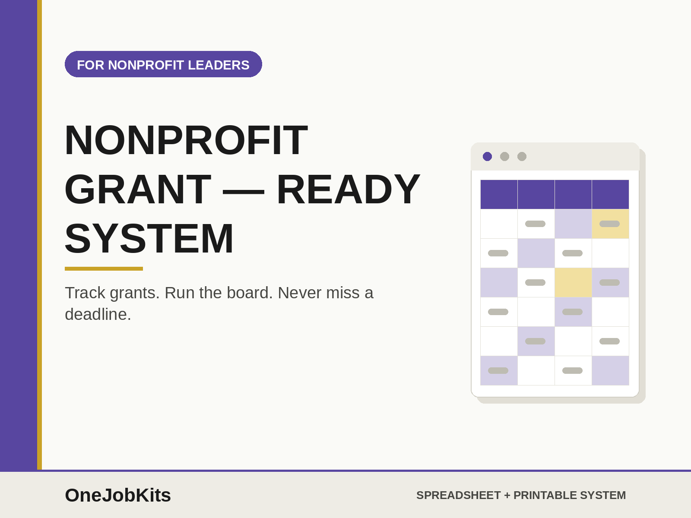

OneJobKits · Kit #11
Nonprofit Grant-Ready + Board System — nonprofit grant readiness checklist

If you searched for a nonprofit grant readiness checklist, you are probably about to apply — or reapply — and you know the audit is coming before the application: funders ask for the same documents every time, and small nonprofits lose grants for boring reasons. A deadline nobody tracked. A budget that doesn't match the narrative. Board minutes that don't exist. A final report that went out late. Not bad missions — bad systems.
This page gives you the readiness test free: the 28-item checklist plus the funder-fit scorecard. Below it is the system that passes it — a 9-tab workbook for the pipeline, budgets and board, the board binder templates, and a reporting calendar that keeps awarded money in good standing. It is an organisational template system only — not fundraising, legal, tax or accounting advice — and it makes no claim about any grant outcome.
Free download — start with the Grant-Ready Checklist + Funder-Fit Scorecard
The Grant-Ready Checklist + Funder-Fit Scorecard is a 5-page fillable PDF: 28 tick-boxes covering the documents and data funders ask for, in order — each with where it lives and a ready/not-ready status — plus the one-page scorecard sheet. Score one live opportunity and see immediately whether it is worth your hours.
Download the free Grant-Ready Checklist + Scorecard (PDF)Get it on Gumroad instead
What the free checklist does not do: it tells you where you stand today. The full kit below is the running system that keeps you standing there — deadlines flagged automatically, budgets forced to reconcile, board paperwork that exists, and every post-award report on a calendar before it's due.
What's inside the full kit
- Workbook (spreadsheet, 9 tabs) — START HERE with the at-a-glance panel · Grant Pipeline — 40 opportunity rows: funder, program, amount, status, with days-left counting and overdue flags on every dated field · Deadline Dashboard — every deadline across pipeline and reporting, auto-sorted by formula · Funder-Fit Scorecard — weighted scoring (alignment 30% · eligibility 30% · amount vs effort 20% · reporting burden 20%) with the four verdicts · Program Budget Builder — personnel by hours × rate, direct costs, documented match and in-kind, indirect · Proposal Budget Summary — the funder-format roll-up with the ✓ RECONCILED check · Reporting Calendar — awards, reports, periods and documents required · Board Roster & Terms — terms, officers, committees, 90-day expiry flags · Policy Tracker — the 14 core policies with status and review dates
- Worked example file — the workbook filled by a fictional small nonprofit (shown below), including a reconciled budget and a pipeline with money at every stage
- Board Binder (Word + fillable PDF, 8 pages, 230 fields) — meeting agenda template · two-page minutes template (motions, votes, action items, resolution numbers) · conflict-of-interest policy template · annual disclosure form · resolution log
- Capability Statement (Word + fillable PDF) — the structured one-page organisational summary funders and partners ask for
- Setup Guide (PDF, 10 pages) — file map, workbook setup, the deadline and budget-reconciliation workflows, board cadence, funder-variance rules, version control — and how to run the whole system on a 30-minute weekly routine
- Pro ($199) adds: per-program pipeline tabs (up to four programs) with a Multi-Program Dashboard, and the Fiscal Sponsorship tracker
A filled example — so you can see the finished thing
The kit's own worked example belongs to the Riverside Youth Arts Alliance, a fictional youth-arts nonprofit. The organisation is invented; every figure below is the example file's own data:
| From the example file | The numbers, as recorded |
|---|---|
| Grant Pipeline | 8 grants at different stages — $355,000 in active pipeline value, each with funder, deadline, status and days-left flags doing the watching |
| Program Budget → Proposal Summary | A $128,504.20 request built line by line, plus $22,600 of documented cash and in-kind match — and the summary reads ✓ RECONCILED against the amount requested |
| Reporting Calendar | 5 reporting obligations on the books — 4 on track, 1 flagged OVERDUE, visible on the dashboard instead of discovered by the funder |
| Board Roster & Terms | A 7-member board with one term expiring inside the 90-day flag window and one already ended — the succession conversation, started by the sheet |
| Policy Tracker | Core policies marked honestly — adopted, in draft, missing — so the binder work is a list, not a mystery |
That is the difference between readiness as a scramble and readiness as a state: the documents exist, the budget proves itself, and the deadlines flag themselves.
Who it is for
Executive directors, founders and board treasurers of nonprofits under roughly $1M in budget with no development staff — organisations applying for, or about to apply for, foundation and government grants, who need the system a development department would have built.
Who it is not for
Anyone wanting grants written for them or a prediction of success, and established organisations with a development department (you already have this — or should build your own). Funder guidelines outrank these files wherever they differ; requirements vary by funder, and your board and advisors make the final calls.
Questions buyers ask
- Will this write our grant proposals for us?
- No — and that is deliberate. This kit writes nothing for you; it organises everything around the writing: the pipeline and its deadlines, the budget that has to reconcile with the narrative, the board paperwork funders ask to see, and every report owed after you win. Small nonprofits lose grants for boring reasons — a missed deadline, a mismatched budget, minutes that don't exist — and boring reasons are what a system fixes.
- How does the funder-fit scorecard decide what we chase?
- Each opportunity is scored 0–5 on four weighted criteria: mission/funder alignment (30%), eligibility & readiness (30%), amount vs effort (20%) and reporting burden (20%). The weighted score returns one of four honest verdicts: STRONG FIT, WORTH PURSUING, ONLY IF YOU HAVE CAPACITY, or SKIP ON PURPOSE — so a small team spends its hours on grants it can actually win and service.
- Our budget never matches the proposal narrative — how does this help?
- The Program Budget Builder builds the budget line by line — personnel with hours × rate, other direct costs, documented match and in-kind, indirect — and the Proposal Budget Summary rolls it into funder format beside the amount you plan to request. A reconciliation check must read ✓ RECONCILED, with a zero variance, before the budget is finished. The mismatch gets caught by the sheet, not by the funder.
- Our board minutes basically don't exist. Where do we start?
- With the Board Binder: meeting agenda template, a two-page minutes template that captures motions, votes, action items and resolution numbers, a conflict-of-interest policy template with the annual disclosure form, and a resolution log. The workbook adds the Board Roster & Terms tab (90-day expiry flags) and a Policy Tracker covering the 14 core policies, each marked Adopted, In draft, Missing or N/A — so the gaps are visible and closable, one meeting at a time.
- What happens after we win a grant?
- Every award goes on the Reporting Calendar at the moment it's won: report type, period covered, due date, documents required and status — with days-left counting and OVERDUE flags. The Deadline Dashboard also pulls reporting deadlines in beside application deadlines, so a final report never goes out late because nobody was watching it.
- We run several programs — what does Pro add?
- One pipeline tab per program (up to four) feeding a Multi-Program Dashboard that totals the whole pipeline, plus a Fiscal Sponsorship tracker for organisations operating under — or acting as — a fiscal sponsor.
- What does the free checklist cover, and what does the full kit add?
- The free download is the 28-item grant-ready checklist — the documents and data funders ask for, in order, each with where it lives and a ready/not-ready status — plus the one-page funder-fit scorecard, so you can score one live opportunity today. The full kit runs the whole operation: pipeline, dashboards, budgets, board binder, reporting calendar and the 30-minute weekly routine from the setup guide.
Prices
Standard: $149 · Pro: $199 — one-time payment, digital download. No subscription; the files are yours.
Can't find the kit you need?
We build it. Ask us — first asker gets it at half the shelf price. Tell us the job at onejobkits.com and we will build the kit for it.
Related kits
Please know: this is an organisational template system only — not fundraising, legal, tax or accounting advice, and it makes no claim about any grant outcome. Funder guidelines outrank these files wherever they differ. All example data is fictional (the Riverside Youth Arts Alliance is invented, and the example file says so).